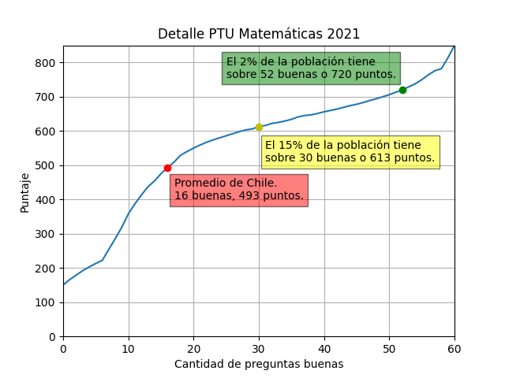

Pueden buscar sus puntajes en peseu.com si no se acuerdan cuánto sacaron.
Convierte puntajes PTU a nota entre 1 y 7 con una escala de 50% y 60%.
Tablas de puntajes obtenidas de la página del Demre.
Todo
el cálculo se hace en Javascript en esta misma página, por si alguien quiere revisarlo.
Reclamos, comentarios quejas y otros al mail jisaa [arroba] puc.cl
Para los que tienen curiosidad, el promedio de la PTU siempre es 500 puntos (con una desviación estándar de 110, truncando entre 150 y 850), la escala se recalcula todos los años para mantener esto.
Por último un gráfico con más detalle de la prueba de matemáticas del año 2021.

Convertidor de puntajes PSU admisiones 2004 a 2020.
Fuentes de datos:
Para compartir esta página, el link fácil es bit.do/puntajes